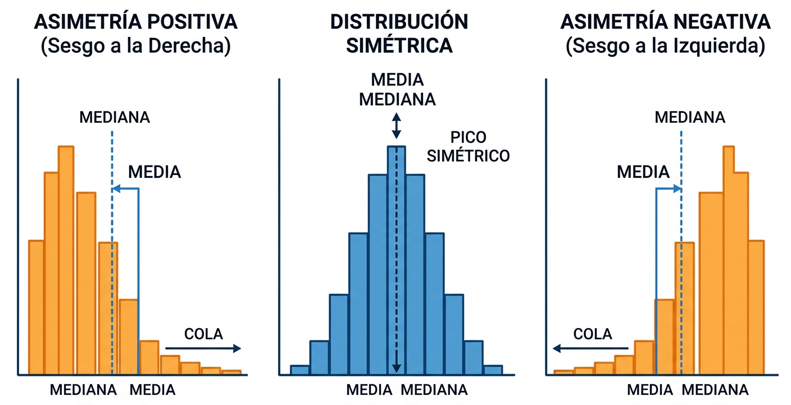

2 Descriptive Statistics
2.1 Measures of central tendency and position
Measures of position summarize a dataset using a numerical value. If this numerical value lies toward the center of the distribution, it is referred to as a measure of central position. The main measures of central position are the mean, the median, and the mode.
2.1.1 Arithmetic mean
Given a quantitative statistical variable, \(X\), with values \(x_1, x_2, \ldots, x_k\) and frequencies \(n_1, n_2, \ldots, n_k\), the arithmetic mean is defined, and denoted by \(\bar{x}\), as: \[\bar{x}=\frac{1}{n} \sum_{i=1}^k n_i x_i\] where \(n\) is the total number of observations.
2.1.2 Median
The median is defined as the value of the statistical variable that divides the dataset into two equal parts, assuming the values are ordered.
Two situations may arise:
If no value \(x_i\) has a cumulative relative frequency equal to 0.5. Then, \(Me = x_i\) such that \(F_{i-1} < 0.5 < F_i\).
If there exists a value \(x_i\) whose cumulative relative frequency is 0.5. In this case, the median is taken as the arithmetic mean of the values \(x_i\) and \(x_{i+1}\), in which case the median will not coincide with any value of the statistical variable. \[Me = \frac{x_{i}+x_{i+1}}{2}\]
2.1.3 Mode
The mode is the value that occurs most frequently. There may be more than one mode.
In the case where the variable has a single mode, it is uniquely defined: \[Mo=x_i\quad \text{if}\quad n_i=\max_j {n_j}\]
When there is more than one mode, statistical software outputs typically display the one with the smallest value.
2.1.4 Quartiles and Percentiles
The percentiles are the values of the statistical variable that divide the dataset (assumed to be ordered in increasing order) into 100 intervals with an equal number of observations. They are denoted by: \(P_1, P_2, \ldots, P_{99}\).
The quartiles divide the dataset into four intervals with an equal number of observations. They are denoted by: \(Q_1, Q_2, Q_3\).
2.2 Measures of dispersion
Measures of dispersion quantify the variability of a set of observations, providing information about the greater or lesser representativeness of the measures of central tendency.
2.2.1 Range
The range, denoted by \(Re\), is defined as the difference between the maximum and minimum values of the distribution. \[Re = \max_i x_i - \min_i x_i\]
2.2.2 Interquartile range
The interquartile range, denoted by \(RIQ\), is defined as the difference between the third and the first quartile. Therefore, it provides information about the range of values in which the central 50% of the observations lie. \[RIQ = Q_3 - Q_1\]
2.2.3 Variance
The variance, denoted by \(\sigma^2\), is defined as the arithmetic mean of the squared deviations between the values of the statistical variable and the arithmetic mean. \[\sigma^2 = \frac{1}{n} \sum_{i=1}^k n_i\left(x_i - \bar{x}\right)^2 = \frac{1}{n} \sum_{i=1}^k n_i x_i^2 - \bar{x}^2\]
2.2.4 Standard deviation
The standard deviation, denoted by \(\sigma\), is defined as the positive square root of the variance.
2.2.5 Coefficient of variation
The Pearson coefficient of variation, denoted by \(CV\), is defined as the ratio between the standard deviation and the arithmetic mean, \[CV = \frac{\sigma}{\bar{x}}\]
It is used to compare the dispersion of two or more distributions in which the variables are expressed in different units. It represents how many times the standard deviation contains the arithmetic mean; therefore, the larger the coefficient of variation, the greater the number of times the standard deviation contains the arithmetic mean and, consequently, the less representative the arithmetic mean is.
2.3 Measures of shape
Measures of shape describe the silhouette of the distribution.
Skewness coefficient: indicates whether the data cluster more on one side of the mean than the other. It is defined as \[\gamma_1 = \frac{\mu_3}{\sigma_3}\]
If \(\gamma_1 = 0\), the distribution is symmetric. Both tails are equal (as in the Gaussian bell curve).
If \(\gamma_1 > 0\), the distribution is positively skewed (right-skewed). The “tail” of the distribution is longer on the right side.
If \(\gamma_1 < 0\), the distribution is negatively skewed (left-skewed). The “tail” of the distribution is longer on the left side.

Kurtosis coefficient: Measures how “peaked” or flat the distribution is, i.e., how concentrated the data are in the central region and in the tails (extremes). It is defined as \[\gamma_2 = \frac{\mu_4}{\sigma_4} - 3\]
If \(\gamma_2 = 0\), the distribution is called mesokurtic, as peaked as the normal distribution, i.e., it has normal kurtosis.
If \(\gamma_2 > 0\), the distribution is more peaked than the normal distribution, with many data points concentrated in the center, and it is called leptokurtic.
If \(\gamma_2 < 0\), the distribution is flatter than the normal distribution, with more dispersed data, and it is called platykurtic.
2.4 Graphical representations
Histogram: It is used to visualize the frequency distribution of the variable. This is very useful for detecting asymmetry, identifying kurtosis, and spotting possible outliers.
Boxplot: It consists of graphically representing a summary of the data distribution using its quartiles. It shows the dispersion of the data and is very useful for detecting outliers and asymmetries.
2.5 Example: Quality Control in Microelectronics
The thickness of a gold coating layer (in micrometers, \(\mu m\)) deposited on a printed circuit board using a chemical process has been measured. The target thickness is 2.50 \(\mu m\). Here are the data from 15 measurements taken by a high-precision sensor: \[2.42, 2.45, 2.48, 2.50, 2.51, 2.52, 2.53, 2.53, 2.54, 2.56, 2.58, 2.60, 2.62, 2.75, 2.81\] The descriptive statistics obtained in this case are as follows:
2.5.1 Measures of position
Mean: \(\bar{x} = 2.56 ,\mu m\) (higher than the target value of 2.50)
Median: \(Me = 2.53 \mu m\)
Quartiles: \(Q_1 (25\%) = 2.505 \mu m\) y \(Q_3 (75\%) = 2.590 \mu m\)
2.5.2 Measures of dispersion
Range: 2.810 - 2.420 = 0.39\(\mu m\)
Standard deviation: \(\sigma = 0.104\mu m\)
Coefficient of variation: \(0.104/2.56 = 0.041 ,\mu m\). This is a very low dispersion, which indicates a highly precise process, although it is slightly shifted from the target value.
2.5.3 Measures of shape
Skewness coefficient: 1.156 \(\mu m\), indicating right skewness. The Mean (2.56) > Median (2.53).
Kurtosis coefficient: 3.769 \(\mu m\), indicating a sharper peak than normal, i.e., the distribution is leptokurtic. Most thickness values are highly concentrated.
2.5.4 Graphical representations
Histogram and boxplot:

The process shows high precision in 50% of the samples (within the box), but it exhibits instability toward the upper limit. The histogram confirms a positive skew, and the boxplot identifies two outliers at \(2.75 ,\mu m\) and \(2.81 ,\mu m\). It is recommended to recalibrate the process to center the median at \(2.50\) and reduce material waste.